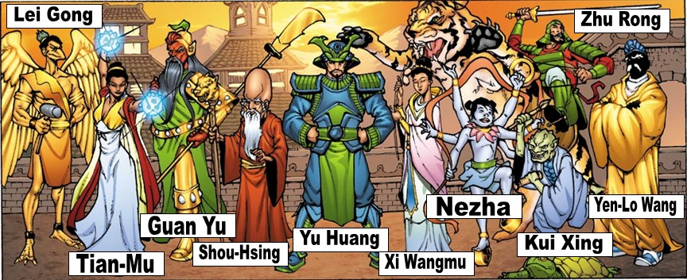

| Religion China |
| Inicio | Religiones Monoteistas | Religiones Politeistas | Religiones Panteistas | No Teistas | Cristianismo | Islam | Hinduismo | Religion China | Budismo |
La religión tradicional china
La religión tradicional china (también conocida como religión tradicional Han1 o shenismo2) es la religión propia y autóctona de la China. Es una religión politeísta y con ciertos elementos del chamanismo y está profundamente influenciada por el budismo, el confucianismo y el taoísmo.
Actualmente es la religión predominante en China y a pesar de ello su número de creyentes es difícil de calcular ya que las fuentes varían entre 880 millones y 390 millones, además en las encuestas y censos del gobierno chino por lo general las personas se afilian como budistas o taoístas si es que se afilian acaso. Siendo una religión sincrética, resulta difícil de diferenciarla de las otras tradiciones espirituales chinas más organizadas.
El nombre más común, aunque un tanto genérico, es religión tradicional china. Tradicionalmente en los textos académicos occidentales también se le ha denominado religión o creencia popular china (folk religion o folk belief en inglés). Sin embargo, en la tradición académica china el uso de popular o folk (民間宗教, mínjiān zōngjiào) se refiere únicamente a algunas religiones salvacionistas chinas 3.
Conforme aumentaban los estudios sociológicos acerca de los cultos tradicionales, los intelectuales y filósofos en China propusieron la adopción de un nombre formal para resolver esta confusión terminológica, incitado además por una agencia del gobierno de la República Popular China cuyo objetivo era dotar a la religión china de estatus legal. Los términos que se han ido proponiendo incluyen religión nativa china o religión indígena china (民俗宗教, mínsú zōngjiào), religión étnica china (民族宗教, mínzú zōngjiào)3 o simplemente como religión china (中華教, Zhōnghuájiào), aunque este último quizá dé a entender que es la única religión en China.
Durante los años 50, el antropólogo Allan J. A. Elliott creó el término Shenismo (神教 Shénjiào)4, del cual derivó más tarde Shenxianismo (神仙教 Shénxiānjiào) más aceptado entre los intelectuales chinos. Este procede de la palabra Shen (神), que significa deidad o espíritu (propio de la religión tradicional china, pero también como nombre aplicable a cualquier otra religión). El mismo pictograma existe en el japonés, y con el mismo significado, pero se lee diferente: kami.
La religión tradicional china rinde culto a las múltiples deidades e inmortales (神, Shen) que pueden proceder de un fenómeno, de un comportamiento humano, de los progenitores de un linaje... las religiones chinas tienen una variedad de fuentes, formas locales, antecedentes fundadores y rituales. A pesar de esta diversidad, existe un marco teórico-filosófico común que se puede resumir en cuatro conceptos teológicos, cosmológicos y morales: Tian (天 - el Cielo), la fuente trascendente del significado moral; qì (氣), la respiración o energía que anima el universo; jingzu (敬 祖), la veneración de los antepasados; y bao ying (報應), la reciprocidad moral; Además de dos conceptos tradicionales de destino y significado: ming yun (命運), el destino personal o la prosperidad; y yuanfen (緣分), "coincidencia fatídica", es decir, posibilidades buenas y malas y relaciones potenciales.
El concepto dual del Yin y yang (陰陽) es la polaridad que describe el orden del universo, donde el yin representa lo pasivo, lo femenino y la tierra, y el yang representa lo activo, lo masculino y el cielo.
El modo de comprender las religiones chinas difiere de las religiones occidentales. La religión popular china impregna todos los aspectos de la vida social. Muchos estudiosos, como el sociólogo chino C.K. Yang, ven la religión china profundamente arraigada en la vida familiar y cívica, en lugar de expresarse en una estructura organizativa separada, como es la iglesia. Para participar, la religión china no requiere una "conversión" de los creyentes, sino su "asociación". Tampoco se pretende tener fe en un dogma. Sus seguidores se relacionan con la religión mediante la pertinencia. Es decir, "pertenecer" a la comunidad local, a un linaje, a un pueblo, con sus dioses y rituales. Es por ello que el culto chino no tiene una estructura jerárquica ni hay un líder espiritual ni libro sagrado (como en el catolicismo).
La puesta en valor de 'lo local' explica la diversidad de tradiciones religiosas en China (que, sin embargo, tienen también muchos nexos comunes entre ellas). Aunque muchos estudiosos señalan que es imposible hacer distinciones claras, desde la década de 1970, varios sinólogos adoptaron la idea de una religión china unificada para definir a la identidad nacional china, de manera similar al hinduismo para India o el shinto para Japón.
La religión tradicional china, en términos generales, es una forma de politeísmo y sincretismo que incluye la veneración de los ancestros, el culto a dioses naturales e incluso a astros como la luna y el sol, extrayendo del budismo, el taoísmo y el confucionismo gran parte de su doctrina espiritual. En muchos casos, santos taoístas, budas y dioses chinos se entremezclan. Parte de la religión incluye la brujería realizada por parte de hombres especializados.
Sociedad de los Adoradores de Dios
Secta creada por Hong Xiuquan en la que se creía que Shangdi era el padre de Hong y Jesucristo, siendo Hong el hermano menor al que se le había encomendado restaurar la adoración tradicional a Shangdi, instaurar los preceptos cristianos y limpiar China del confucionismo, que se creía que era la herramienta utilizada por los manchúes para mantenerse en el poder y marginar a los han, la etnia mayoritaria del país.
Guan Yu (關羽), Dios de la verdad y la lealtad
Baosheng Dadi (保生大帝), Gran Emperador de la vida.
Cai Shen (財神) Dios de la salud y el bienestar.
Hu Ye (虎爺 "Señor Tigre"), un espíritu guardián.
Matsu (媽祖), la diosa patrona de los marineros.
Shangdi (上帝) (lit. Emperador Supremo)
Cheng Huang (城隍), deidades protectoras
Sun Wukong (孫悟空，齊天大聖)； "El Rey Mono"
Tu Di Gong (土地公, tǔ dì gōng), dios de la tierra.
Wenchangdi (文昌帝 "Emperador de la cultura"), dios del estudio.
Xi Wangmu (西王母), "Reina Madre del Oeste"
Yuexia Laoren (月下老人) "Anciano en la Luna"
Zao Shen (灶君|灶神), Dios de la cocina
Zhusheng Niangniang (註生娘娘 "Diosa del Nacimiento"). Diosa de la fertilidad.
Guan Yin (觀音 " Diosa de la compasión y misericordia"). Diosa de la compasión y misericordia, madre, Buda femenino
